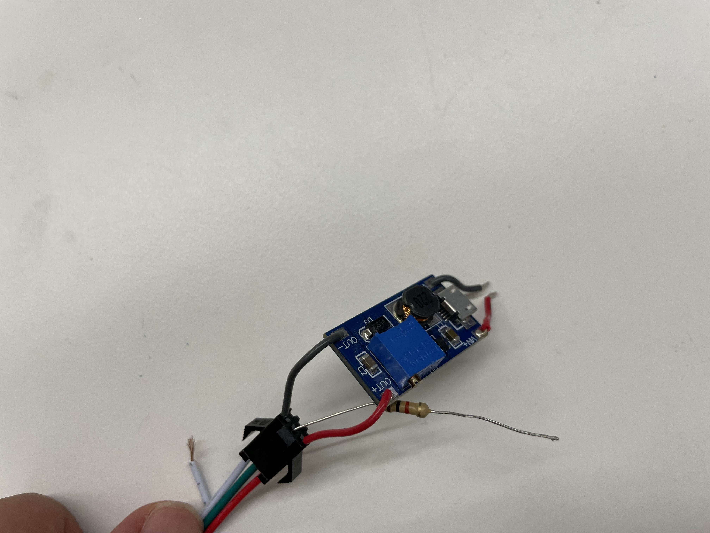

<div class="textcontainer">
<p class="margin"></p>
<h2>Final Project: BIKE TURNING SIGNAL SYSTEM</h2>
<h2>VIDEO PLACEHOLDER</h2>
<h3>Process</h3>
<h5>In addition to the <a href="../07_outputs/index.html">MVP</a> progress. This couple of weeks we were assigned to continue developing
our projects and figure out the main challenges. For my project, at the MVP stage I had already created all the components needed,
and in theory I justt needed to solder and encapsulate everything. However, after the MVP, I received a lot of feedback
which helped me imporve my designs. The main improvements I focused on were the following:</h5>
<h4>1. Improve Visibility</h4>
<h5>One of my concerns previous to the MVP was whether the LED's would be visible
and truly make bikes visible. After pondering upon that, I decided to change the 5V LED strip to a 12V LED strip.
I ordered the following <a href="https://www.amazon.com/ALITOVE-Addressable-Programmable-Waterproof-Self-Adhesive/dp/B07M8GKBJM/ref=sr_1_4?crid=1R91IFZU9VZZQ&dib=eyJ2IjoiMSJ9.fvyaJ7A5ovxLEubhSHEp7AmlzY6JeFaMi5uky0cY1yRn4iGfd3_ITLBIFr8W_jxWHbIns5YP8_1xsyWQa1SFlpQ2fLQAd5l2bVXRPpdrECMob86GyWqlKcU5et9N2MHG6ZQxWfYPbMQKpb9yybsxhiZK2ZiKHwW-I4HonKINZ4a--TwASkOowga8h8QO1B9esTX8Zn57RTThFG0qvBcMS0hgT9fbcE_L9Z0KPOE-jMBHZChc8MvpH28TNYjf_JXyUxenFMZkfoU_ktC0I24p1R96PnMlHjUNRbr0TP9O8J0.e7Vy04Eo-0cbv_TpvqiqyYXzVOGlJcNhfJxT0rRoNgw&dib_tag=se&keywords=waterproof%2B12v%2Baddressable%2Bleds&qid=1762971403&s=hi&sprefix=waterproof%2B12v%2Baddressable%2Bleds%2Ctools%2C128&sr=1-4&th=1">product</a> via Amazon.
I chose it because it complied with the following criteria: 12V voltage to ensure increased brightness, IP 65 which indicates water resistance and dust resistance
, and lastly they were addressable and cuttable. </h5>
<br/>
<h5> This implied another challenge because the ESP32 can only output 5V and it would not be convenient to implement a 12V
battery on top of the already required 5V battery for the microcontroller. To solve this issue I decided to use
a booster which would take the 5V from the power and ground from my ESP32 and boost it to 12V for the LED strip.
I was able to make it work; however, it unfortunately fried my microcontroller. I believe that this happened because
the information pin requires even a higher transistor (I was using 1k). Everything was working fine until suddenly
fumes started coming out of the ESP32.
</h5>
<img width="640" height="640" src="fried.jpg">

<br/>
<h5>This has definetly been the most frustrating part of my process so far. I had already solved the most complex
coding issues which I'll describe later. Nevertheless, I have to remember that this is all part of the engineering
and design process, and that failing and burning stuff means that progress is being made. To ensure that this
was not just a frustrating moment, I checked each component afterwards and the resistor had some char on it.
After consulting with Bobby, I will research other projects with 12V or higher led strips and emulate them; specifically,
I will ask Xander since I believe he is also working with high voltage lights.
</h5>
<h4>Use screw for clamping mechanism.</h4>
<h5>One of my concerns with my device is that the clamp was not tight enough but that it would never be so since
I'd require an exact value. Which even if I managed to obtain, would be useless for different bikes. Consequently,
incorporating feedback from my MVP, I added a screw mechanism to tighten the clamp. I am very happy with how
the mechanism works and it is a substantial improvement from the past version. This will enable even
easier use of the switches since the base has more tension.</h5>
<img width="640" height="640" src="clamp.jpg">
<img width="640" height="640" src="clamp2.jpg">
<h4>3. Transform into wireless device</h4>
<h5>One of the main suggestions I received was to make the device wirless since for the MVP, there was a wire going
all through my bike. Additionally, this would create adittional challenges for water proofness. </h5>
<br/>
<h5> To achieve this I decided to use an ESP32 at the baseplate and a Xiao at the switch in the handrail. I chose
those chips because they can communicate via the ESP32 now protocol. This meant that I had to re-write the
entire code, but I am glad I did because I learned a lot about wireless communication, something I had not done at
all before.
</h5>
<br/>
<h5> Download my code ! </h5>
<h5></h5>
</div>